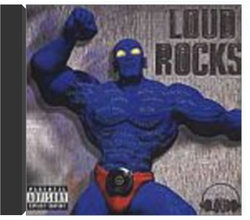
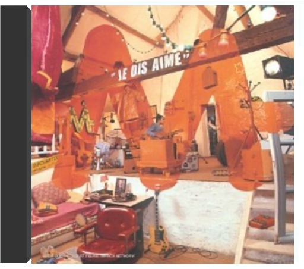

the two towersthe lord of the rings the two towersthe lord of the rings  Après le succès public et critique de La Communauté de l'Anneau, Howard Shore se devait de persister dans sa vaste et sombre fresque pour chœur et orchestre, qui puise sa substance dans l'univers olympien de J.R.R Tolkien et se fond dans le visuel titanesque de Peter Jackson. Mieux encore, le compositeur s'élève un cran au-dessus, affinant son orchestration et amplifiant ses contrastes pour dévoiler le ciment de son œuvre. Les faiblesses du premier volet (thème de la Communauté, carences rythmiques…) s'effacent au profit d'une texture toujours aussi massive et ténébreuse, mais plus forte en nuances et en dynamiques, plus axée vers la sublimation que l'illustration. Le Seigneur des Anneaux selon Howard Shore se révèle enfin comme un trilogie majeure, un corps unique qui tire son énergie du chaos et s'illumine de suaves mélopées mystiques. Les Deux Tours fusionne le primitif et le merveilleux, navigue entre le Bien et le Mal avec une réussite qui promet un final d'anthologie. —Jean-Christophe Arlon  the return of the kingthe lord of the rings the return of the kingthe lord of the rings "La fin de toute chose" : tel est l'un des titres de cet album qui clôt dignement la vision du Seigneur des Anneaux selon Howard Shore. La fin ou presque, car on attend avec impatience les ajouts musicaux désormais traditionnels qui accompagnent la version longue en DVD, et surtout la promesse d'un coffret réunissant l'ensemble de la musique écrite pour ce triptyque cinématographique déjà mythique.  transformerlou reed transformerlou reed "Je fais du rock pour adultes." Si Lou Reed ne l'avait pas dit, on en douterait encore… Avec une vaste discographie, en solo ou avec le Velvet Underground, le comique troupier de Long Island, poète urbain au spectre vocal manichéen, aura psychanalysé ses amis, ses ennemis, ses femmes, ses hommes et, ce qui l'intéresse finalement le plus : lui. Aussi, lorsque l'essentiel Transformer sort fin 1972, le Lou est l'androgyne frère aîné d'un Ziggy Stardust terre-à-terre. Ce qui tombe plutôt bien, vu que David Bowie coproduit Transformer avec Mick Ronson qui sortira pour l'occasion ses guitares baroques toujours aussi inspirées : du glam new-yorkais, c'est nouveau, ça vient de sortir ! La légende raflera donc le riff de "Vicious", la beauté étoilée de "Satellite Of Love", la grandiloquence de "Perfect Day" et bien sûr la basse féline et le saxophone torride de "Walk On The Wild Side". Oubliée donc la mauvaise blague du premier album solo de metal progressif avec requins de studio, et retour à des considérations viscéralement plus décadentes. Avec Transformer, la collaboration Bowie/Reed fonctionne plutôt bien. La preuve, les deux hommes ne retravailleront jamais ensemble. —Marc Zisman loud rocksloud rocks On ne peut pas dire que hip-hop et rock fassent toujours bon ménage. Depuis l'explosion du rap et malgré quelques exceptions qui confirment la règle (Beastie Boys, Ice T, Run-DMC, Cypress Hill, etc.), les deux genres ont plutôt tendance à se regarder en chiens de faïence. Depuis la bande originale Judgement Night en 1993, aucun projet, de l'ampleur de Loud Rocks, n'avait tenté de les rabibocher si ce ne sont les tournées monumentales qui, tous les ans, traversent les USA en amalgamant avec succès guitares saturées et groupes en vue du hip-hop nord-américain. Partant de ce constat, le label new- yorkais Loud a proposé à un peu plus d'une douzaine de groupes rock fusion ou hardcore et à des artistes plus surprenants - comme l'antique Ozzy Osbourne - de remodeler son fond de catalogue à grands coups de riffs nerveux. C'est ainsi que Tha Alkaholiks sont revisités par Sugar Ray et Crazitown ; le Wu-Tang Clan par S.O.A.D. ; Tom Morello, de Rage Against The Machine associé à Chad Smith des Red Hot Chili Peppers, Xzibit par Endo ; Big Pun par Shootyz Groove ; M.O.P. par Butch Vig ; Mobb Deep par l'excellent Everlast (ex-House Of Pain) et par Sick Of It All ; enfin les Dead Prez ainsi que le défunt Big Pun par Static X et Shootyz Groove. Sans jamais approcher l'excellence des originaux, toutes ces relectures appliquées flatteront les oreilles entraînées aux triturations de six cordes sans dérouter les autres. —Yann Cherruault  le baptêmem le baptêmem Il aime qu'on l'aime, M ! Ludique et inventif, Matthieu Chedid, qui se cache sous l'initiale M, est ce superhéros qui sème l'amour sur son passage. Guitariste bidouilleur, M joue la dérision bucolique de sa voix de matou châtré en proie aux affres d'un fumeur de cigarettes. Sifflets, boîtes à rythmes et samplers sont au menu de ce premier album essentiellement acoustique. En version électrique, M se fend même d'une parodie disco ("Machistador") (référence appuyée au "Conquistador" d'Alain Bashung ?) des plus grooves. Un baptême du feu très rafraîchissant. — Pascale Hamon je dis aimem M sur scène, fils de Louis et petit-fils d'Andrée dans la vie, Mathieu Chédid semble particulièrement apprécier les super-héros de bande dessinée. Avec sa dégaine de Superman et ses tifs à la "j'ai mis les doigts dans la prise", ce sacré phéno-M est un fantaisiste éclectique qui aime théâtraliser ses prestations scéniques. Touche-à-tout talentueux, musicien complet (il joue des percussions, de la guitare, de la basse et de la batterie) M réitère avec un second album en forme de déclaration au monde entier, Je dis aime. Un décor sonore aux variantes pop, rock et funk qui ne déroge pas aux règles de l'humour ("Le Complexe du corn flakes", "Le Mec hamac", "Le Festival de Connes") et de l'amour. A noter, la reprise originale de "Close To Me" de Cure en français, version M, et de ces deux titres ("Je dis M", "Bonoboo") écrits par sa poétesse de grand-mère. Et oui, c'est comme ça dans le clan Chedid ! —Valérie Dupouy  le tour de mm le tour de mm Petit prodige d'un rock français imbibé de funk et souligné d'un grand sourire, Mathieu Chedid alias M entraîne à sa suite, partout ou il passe, ses délires grandioses et son univers décalé. Ce live ne déroge pas à la règle et replace au cœur de nos salons l'atmosphère enchantée des concerts du bonhomme. |


 Made with Delicious Library
Made with Delicious LibraryNancy, State zipflap congrotus delicious library Thomas, Julien